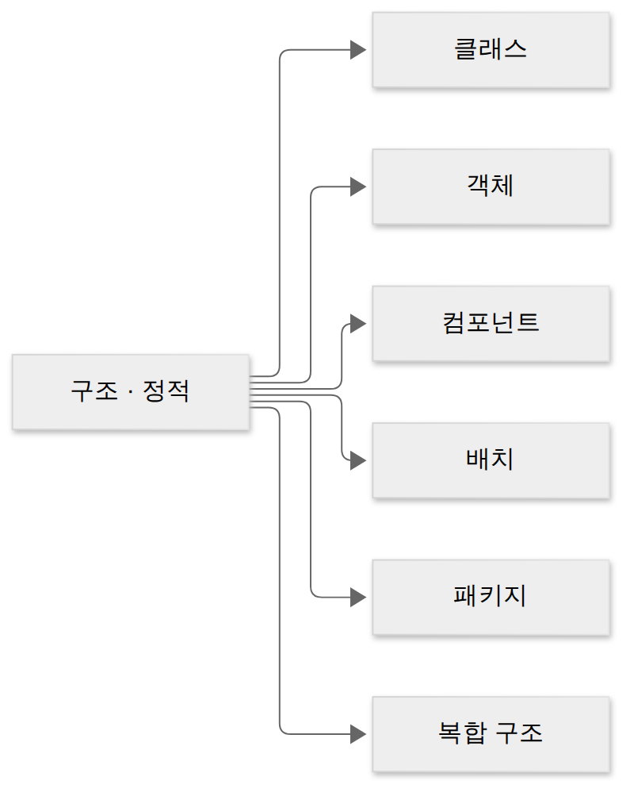
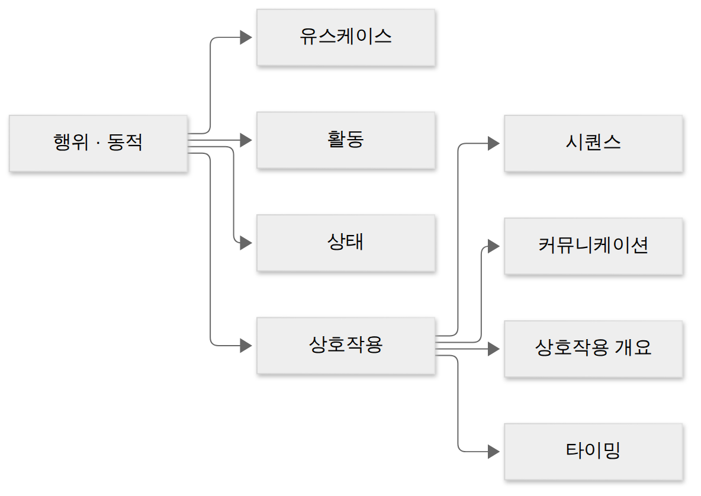
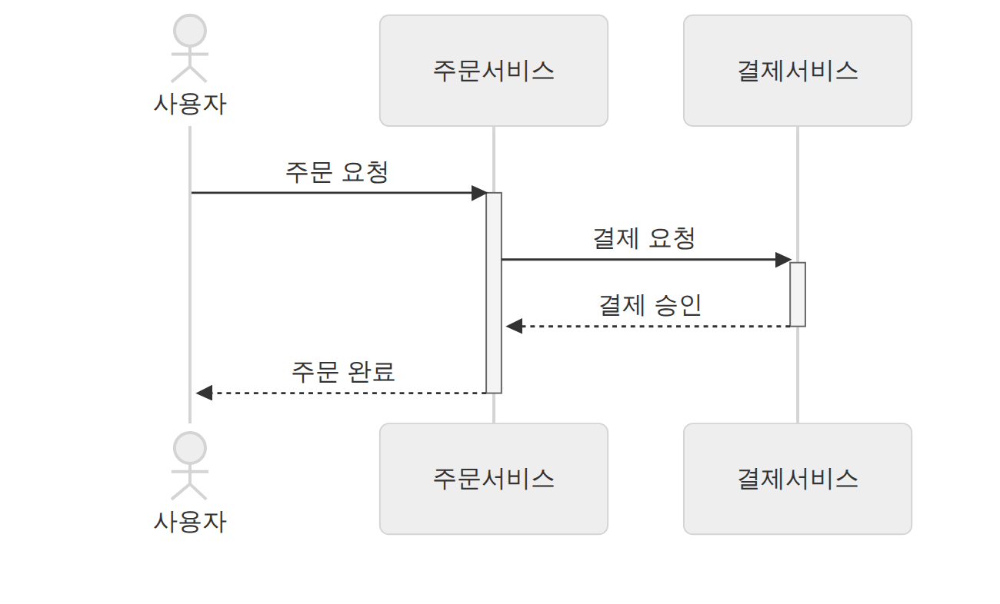
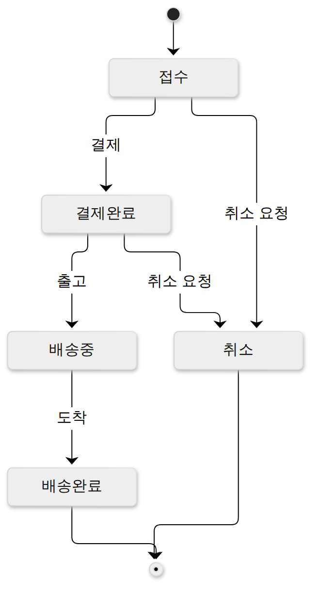
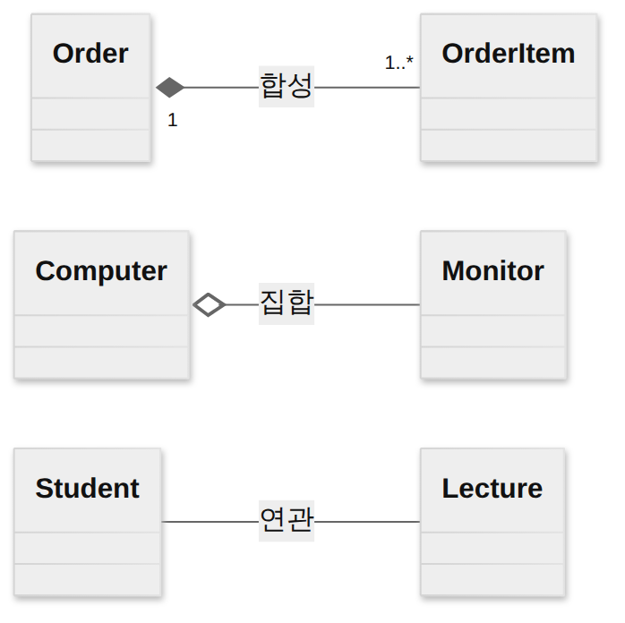
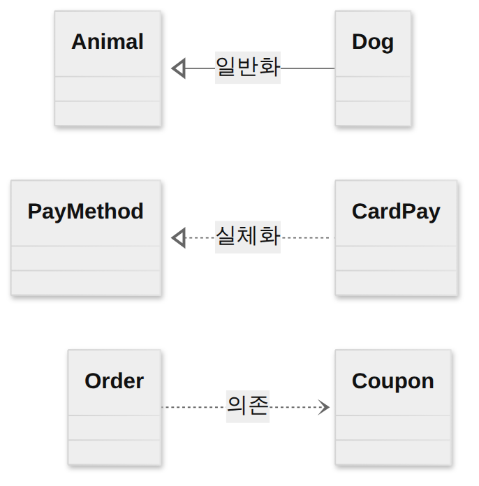

D002 · UML
오늘의 목표: UML을 쓰는 법보다 시험이 묻는 분류와 기호를 잡기. 다이어그램을 구조/행위로 나누고, 클래스 관계 6종의 선·끝 모양과 유스케이스의 include/extend 방향을 그림으로 구별할 수 있게 만들기.
- UML 구성요소(사물·관계·다이어그램)와 사물 4종을 구별한다
- 다이어그램을 구조(정적)와 행위(동적)로 분류한다
- 클래스 관계 6종의 기호와 의미를 구별한다
- 유스케이스 다이어그램의 include/extend/일반화를 구별한다
- 상황(시간 순 메시지·상태 변화·처리 흐름)에 맞는 행위 다이어그램을 고른다
1. UML이란 — 구성요소 큰 그림
UML(Unified Modeling Language)은 OMG가 표준으로 관리하는 객체지향 모델링 언어예요. 요구사항 확인 단계에서는 분석한 요구를 그림(모델)으로 표현하는 도구로 나와요. 시험에서는 “UML은 프로그래밍 언어가 아니라 모델링 언어”, “특정 개발 방법론·언어에 종속되지 않는다”는 성격 문제도 가끔 나와요.
사물 4종
| 사물 | 뜻 | 예 |
|---|---|---|
| 구조 사물 | 시스템의 정적인 부분(명사) | 클래스, 인터페이스, 유스케이스, 컴포넌트, 노드 |
| 행동 사물 | 시간·공간에 따른 동작(동사) | 상호작용(메시지), 상태 머신 |
| 그룹 사물 | 요소를 묶는 단위 | 패키지 |
| 주해 사물 | 설명·제약을 덧붙이는 메모 | 노트(귀 접힌 사각형) |
※ 사물 4종 분류는 국내 수험서에서 쓰는 정리예요(UML 2.5 명세 본문 용어와는 조금 달라요). 시험은 이 분류로 출제돼요.
2. 다이어그램 분류 — 구조(정적) vs 행위(동적)
시간 개념 없음 = 정적
시간에 따른 변화 = 동적


※ UML 2.5 명세에는 구조 쪽에 프로파일 다이어그램도 있어요(7종). 시험 선지는 보통 위 6종 기준으로 판단하면 돼요.
3. 다이어그램 한눈 표
| 다이어그램 | 분류 | 무엇을 보여 주나 | 시험 키워드 |
|---|---|---|---|
| 클래스 | 구조 | 클래스의 속성·연산과 클래스 간 관계 | 속성·오퍼레이션, 관계 기호 |
| 객체 | 구조 | 특정 시점의 인스턴스와 링크 | 인스턴스, 스냅샷 |
| 컴포넌트 | 구조 | 소프트웨어 구성요소와 인터페이스 | 모듈·라이브러리, 구현 관점 |
| 배치 | 구조 | 물리 노드(서버·장비)와 그 위의 산출물 | 노드, 하드웨어, 물리적 배치 |
| 패키지 | 구조 | 요소를 묶은 그룹과 그룹 간 의존 | 그룹화, 네임스페이스 |
| 복합 구조 | 구조 | 클래스·컴포넌트의 내부 구조 | 내부 파트, 포트 |
| 유스케이스 | 행위 | 사용자(액터) 관점의 기능 | 액터, 시스템 경계, 요구 분석 |
| 시퀀스 | 행위 | 객체 간 메시지를 시간 순서로 | 생명선, 활성 박스, 메시지 |
| 커뮤니케이션 | 행위 | 객체 간 메시지를 연결(링크) 중심으로 | 링크, 메시지 번호 |
| 상태 | 행위 | 한 객체가 이벤트에 따라 바뀌는 상태 | 상태 전이, 이벤트 |
| 활동 | 행위 | 처리 흐름(로직·업무 절차) | 분기, 병렬, 스윔레인 |
| 타이밍 | 행위 | 시간 제약에 따른 상태 변화 | 시간 축, 제약 |
시퀀스 다이어그램 — 시간 순서
세로 점선이 생명선(객체가 살아 있는 시간), 위에서 아래로 시간이 흘러요. 가로 화살표가 메시지, 실선은 호출이고 점선은 응답이에요.

시퀀스 구성요소: 액터객체생명선활성 박스(실행)메시지프레임(alt·loop)
상태 다이어그램 — 이벤트에 따른 상태 변화

검은 점이 시작, 테두리 있는 점이 종료예요. 화살표 위의 글자가 상태를 바꾸는 이벤트예요.
“메시지 순서”가 키워드
순서는 메시지 번호(1, 1.1…)로 표시
4. 클래스 관계 6종 — 선과 끝 모양
선은 실선/점선 두 가지, 끝 모양은 없음·빈 마름모·채운 마름모·빈 삼각형·열린 화살표로 구별해요. 그림의 왼쪽·오른쪽 배치가 그대로 실제 표기예요.
| 관계 (예) | 선 | 끝 모양 | 의미 |
|---|---|---|---|
| 연관 Association 학생 — 강의 | 실선 | 없음(방향 있으면 열린 화살표) | 서로 알고 참조하는 관계 |
| 집합 Aggregation 컴퓨터 ◇— 모니터 | 실선 | 빈 마름모 ◇ (전체 쪽) | 전체–부분, 부분은 독립적으로 존재 가능 |
| 합성 Composition (포함) 주문 ◆— 주문항목 | 실선 | 채운 마름모 ◆ (전체 쪽) | 전체–부분, 생명주기 공유: 전체가 사라지면 부분도 사라짐 |
| 일반화 Generalization 개 —▷ 동물 | 실선 | 빈 삼각형 △ (부모 쪽) | 상속, is-a |
| 실체화 Realization 카드결제 ┄▷ 결제수단 | 점선 | 빈 삼각형 △ (인터페이스 쪽) | 인터페이스 구현 |
| 의존 Dependency 주문 ┄> 쿠폰 | 점선 | 열린 화살표 (쓰이는 쪽) | 잠깐 사용(매개변수·지역 변수), 상대가 바뀌면 영향 |
컴퓨터를 버려도 모니터는 남는다
주문을 지우면 주문항목도 지워진다
코드로 보면 감이 와요. 합성은 전체가 부분을 직접 만들어 소유하고, 집합은 밖에서 만든 걸 받아서 써요.
// 합성: Order가 OrderItem을 만들고 소유
class Order {
List<OrderItem> items = new ArrayList<>();
}
// 집합: 밖에서 만든 Monitor를 받아 연결
class Computer {
Monitor monitor;
Computer(Monitor m) { monitor = m; }
}
// 의존: 메서드 안에서 잠깐 사용
class OrderService {
void apply(Coupon c) { ... }
}
Mermaid 표기로도 같은 관계를 볼 수 있어요(이름은 영어로 표기).


5. 유스케이스 다이어그램 — include vs extend
| 포함 «include» | 확장 «extend» | |
|---|---|---|
| 성격 | 반드시 실행(필수) | 조건이 맞을 때만 실행(선택) |
| 화살표 | 점선, 기본 → 포함되는 쪽 | 점선, 확장 → 기본 쪽 |
| 용도 | 여러 유스케이스의 공통 기능 추출 (함수 호출처럼) | 기본 흐름에 부가 기능을 덧붙임, 확장점(extension point)에서 끼어듦 |
| 기본 유스케이스는 | 포함된 것 없이는 완결되지 않음 | 확장 없이도 혼자 완결 |
| 예 | 주문하기 ┄> 로그인 | 쿠폰 적용 ┄> 주문하기 |
일반화: 액터끼리(회원 —▷ 고객), 유스케이스끼리(카드 결제 —▷ 결제) 상속 관계를 실선 + 빈 삼각형으로 그려요. 클래스 일반화와 같은 기호예요.
6. 시험 포인트 정리
- UML 구성요소 = 사물·관계·다이어그램 / 사물 = 구조·행동·그룹·주해 (패키지=그룹, 노트=주해)
- 구조 다이어그램 6종 클객컴배패복, 나머지(유스케이스·시퀀스·커뮤니케이션·상태·활동·타이밍·상호작용 개요)는 행위
- 키워드 → 다이어그램: 시간 순서=시퀀스, 상태 전이=상태, 처리 흐름=활동, 물리 노드=배치
- 관계 기호: 실선/점선 + 빈/채운 마름모(전체 쪽) + 빈 삼각형(부모·인터페이스 쪽) + 열린 화살표(의존)
- 집합 vs 합성 = 부분이 독립적으로 사느냐, 같이 사라지느냐
- include = 필수·공통 추출·기본→포함 / extend = 선택·부가·확장→기본
7. 오답 복습 — D001 2번 (워크숍)
어제 “상충하는 요구를 함께 논의해 합의” 문제에서 정적 분석을 골랐어요. 두 용어는 쓰이는 단계부터 달라요.
이해관계자들이 한자리에 모여 집중 논의 → 상충 요구 조율·합의
코드를 실행하지 않고 결함·규칙 위반을 찾음. 도출 기법이 아님
| 상황 | 도출 기법 |
|---|---|
| 소수 핵심 담당자에게 깊이 묻기 | 인터뷰 |
| 많은 사람에게 같은 질문 빠르게 | 설문 |
| 비판 없이 아이디어 많이 내기 | 브레인스토밍 |
| 여러 이해관계자 모여 충돌 조율·합의 | 워크숍 |
| 실제 업무 현장을 지켜보기 | 관찰 |
재확인 문제는 아래 3번이에요.
확인 문제
- 다음 중 구조(정적) 다이어그램은? ① 시퀀스 ② 상태 ③ 컴포넌트 ④ 활동
주문이 삭제되면주문항목도 함께 소멸하는 관계는? ① 연관 ② 집합 ③ 합성 ④ 의존- (오답 복습) 영업·물류·회계 담당자의 요구가 서로 부딪혀서, 이해관계자들을 한자리에 모아 집중 논의로 합의안을 만들려 한다. 알맞은 요구사항 도출 기법은? ① 설문 ② 워크숍 ③ 관찰 ④ 정적 분석
답장: 정처기 D002: 1)번호 2)번호 3)번호